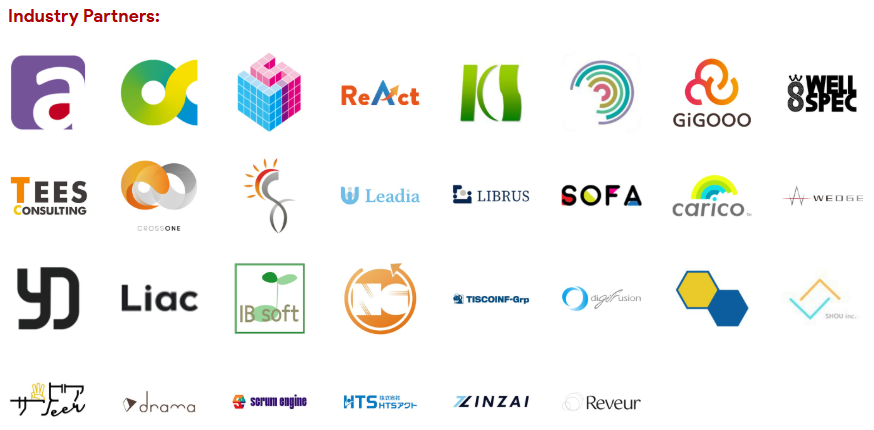

AI Evolution &
Your Future Skills
What Japanese companies need from engineers next.
222 of you told us what you want.
Interested in Japan
Up from 48% before Session 1Want a Workshop
Today includes a live exercise!AI, Data & Security
Your top career interestsIn 2026, AI changed dramatically.
A helper
Humans checked every line of code.
AI agents
AI plans, codes & tests.
Humans direct.
At top tech firms, AI writes most new code.
“We don’t read the source code anymore.”
— Real engineers on teams in Japan, 2026
Coding still matters.
You are the pilot.
AI writes fast—but you must judge if it’s right.
Coding alone is
no longer enough.
changed career plans because AI reshaped entry-level tech.
Decline for young developers aged 22–25 in major tech markets.
Any skill you can write down,
AI can copy.
So, what skills will
you need next?
AI writes the code. You decide what to build.
Understand
What does the client need?
UX Design
How should it feel?
Build
Write the code.
Test
Check the code.
Review
Is it right for users?
Report
Share progress early.
What AI can’t do: talk with your clients.
Clients don’t say everything.
Learn to notice.
Few people have all three.
AI makes you faster. Understanding people makes you rare.
Good requirements start with good questions.
Your client wants an app.
“We want a smartphone app for people who ride our motorbikes in Cambodia. Make riding safer and more fun. We’d like to launch it next April.”
Can you start building right now?
Because halfway through, this happens…
A racing & speed-ranking app 🏁
What would you ask Mr. Sato?
Question each
Per send
Both OK
Timer
Scan & ask Mr. Sato.
What did you ask Mr. Sato? みんなの質問
The riders are delivery workers.
3 questions that uncover what wasn’t said.
Who & When?
誰が、いつ使う？Why?
本当の目的は？What’s Success?
成功をどう測る？Real systems are under attack.
Tech skill is vital.
Japan needs more cybersecurity engineers
ISC2 Cybersecurity Workforce Study · 26% of you here are Cybersecurity majors!AI will defend.
Humans must explain.
Skill × Communication
Tech Skill
Communication
Trusted Engineer
AI builds fast.
Japan Quality builds trust.
Japanese IT Pathway
Where you actually learn all of this—and start your career in Japan.
Two years, zero to Japan.
Japanese → N3
From hiragana to JLPT N3 + IT terms, alongside CADT.
Japanese IT
Requirements (要件定義), design, team projects & manners.
Real Internship
Small team + Japanese PM on real client projects + AI.
Your Career
CV, mock interviews, job offers, visa & arrival support.
Real Japanese, real friends.
Meet 30+ Japanese IT companies.

Students like you are already going.
First batch completed
Japanese language completion ceremony & ready for Japan.
CADT seniors intern in Japan
Seniors from your own campus are flying to Japan next!
Your top worries, our real support.
Japanese
Zero to IT-ready N3, step-by-step with classmates.
Living & Housing
Safe, affordable share house & Osaka setup help.
Work Culture
Business manners, teamwork & real Japanese PM lab.
Far from Family
Osaka contact from Day 1 + senior network waiting.
Clear facts, simple next steps.
Thank you.
Keep asking great questions.
See you at Session 3 & the Japanese Trial Class!